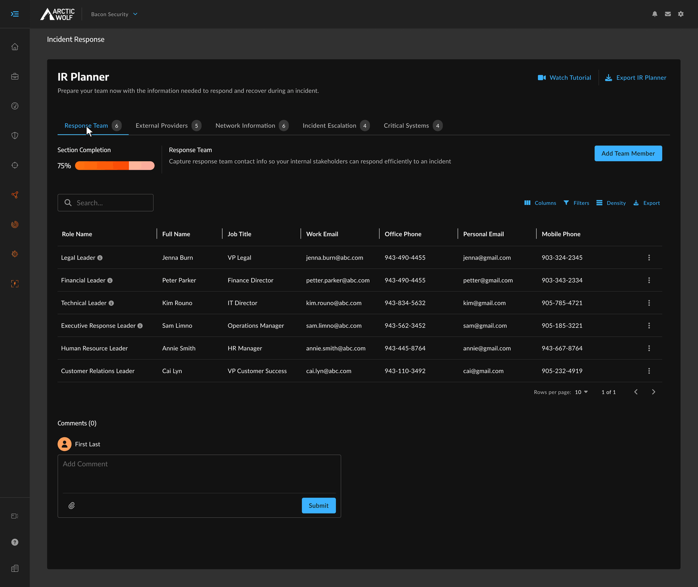

Selected work

Incident Response Dashboard
Designing the operational infrastructure for a $9M product launch, recognized as an IDC category-defining product.

Incident Response Planner
A proactive readiness tool helping security teams build and maintain response plans.